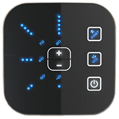
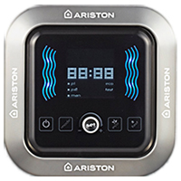

Ошибки водонагревателей Ariston серии Velis
В случае неисправности, все светодиодные индикаторы на панели управления мигают. Для активации функции диагностики нажмите и удерживайте кнопку включения/выключения в течение 5 секунд. Светодиодные индикаторы, соответствующие ошибке, будут мигать (обратитесь к приведенной ниже таблице значения светодиодной индикации в случае ошибки).
1. Базовая версия (BASIC)

Коды ошибок базовой версии
| Код ошибки | Описание ошибки | Действие |
|---|---|---|
| 40° | Неисправность электронной платы |
|
| 40-60° | Неисправность электронной платы (NFC) |
|
| 60° | Обрыв или короткое замыкание датчика температуры NTC1/NTC2 - выходящий бак водонагревателя |
|
| 80° | Перегрев воды, определенный отдельным датчиком (более 105°C) - выходящий бак водонагревателя |
|
| 70-80° | Общий перегрев. Средняя температура датчиков температуры NTC1/NTC2 выше установленной на 12°C - выходящий бак водонагревателя |
|
| 60-70° | Низкая скорость нагрева воды - выходящий бак водонагревателя |
|
| 60-70-80° | Отсутствие воды - выходящий бак водонагревателя |
|
| 50-60° | Обрыв или короткое замыкание датчика температуры NTC1/NTC2 - входящий бак водонагревателя |
|
| 50-80° | Перегрев воды, определенный отдельным датчиком (более 105°C) - входящий бак водонагревателя |
|
| 50-70-80° | Общий перегрев. Средняя температура датчиков температуры NTC1/NTC2 выше установленной на 12°C - входящий бак водонагревателя |
|
| 50-60-70° | Низкая скорость нагрева воды - входящий бак водонагревателя |
|
| 50-60-70-80° | Отсутствие воды - входящий бак водонагревателя |
|
| 40-50-60° | Активирована функция "Антинакипь" |
|
2. Топовая версия (TOP)

На дисплее отображается соответствующий код ошибки. Обратитесь к приведенной ниже таблице для детального описания неисправности.
Коды ошибок топовой версии
| Код ошибки | Описание ошибки | Действие |
|---|---|---|
| E 01 | Неисправность электронной платы |
|
| E 04 | Обрыв или короткое замыкание активного анода |
|
| E 09 | Более 5 перезагрузок в течении 15 минут |
|
| E 61-62 | Неисправность электронной платы (NFC) |
|
| E 10 | Обрыв или короткое замыкание датчика температуры NTC1/NTC2 - выходящий бак водонагревателя |
|
| E 11 | Перегрев воды, определенный отдельным датчиком (более 105°C) - выходящий бак водонагревателя |
|
| E 12 | Общий перегрев. Средняя температура датчиков температуры NTC1/NTC2 выше установленной на 12°C - выходящий бак водонагревателя |
|
| E 14 | Низкая скорость нагрева воды - выходящий бак водонагревателя |
|
| E 15 | Отсутствие воды - выходящий бак водонагревателя |
|
| E 20 | Обрыв или короткое замыкание датчика температуры NTC1/NTC2 - входящий бак водонагревателя |
|
| E 21 | Перегрев воды, определенный отдельным датчиком (более 105°C) - входящий бак водонагревателя |
|
| E 22 | Общий перегрев. Средняя температура датчиков температуры NTC1/NTC2 выше установленной на 12°C - входящий бак водонагревателя |
|
| E 24 | Низкая скорость нагрева воды - входящий бак водонагревателя |
|
| E 25 | Отсутствие воды - входящий бак водонагревателя |
|
| E 70 | Активирована функция "Антинакипь" |
|